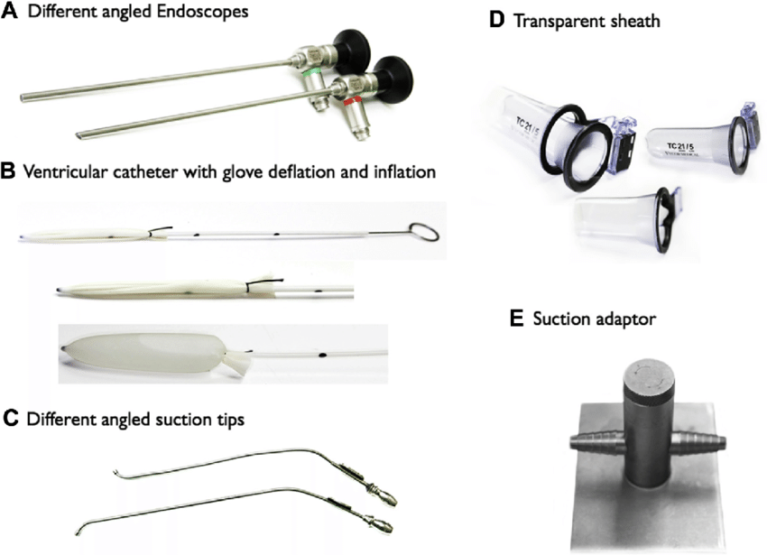

Introduction
hi anthony and josie


What is neuroendoscopy?
- Neuroendoscopy allows neurosurgeons to reach areas of the brain
- Neuroendoscopy can be used to remove brain tumors (the problem I want to talk to)
- Doing brain surgery requires a lot of hardware and software instruments
This page would talk about how we can solve problems that occur in the brain with 3D visuals. I will also be talking about the technology we have now and technology that we could possibly have in the future for better uses.
For my project I want to make an interactive, visual, and informational page where it talks about the brain and have a visual of the brain and the tumors that people can get. The brain can be moved around (360 degrees) by itself at a speed and people are able to move it around themselves if the speed is too slow. I want the information to pop up as the brain moves in a 360 degree.

This image shows a Rigid glass rod endoscope's lens It is a very delicated instrument which allows a surgeon to look into the body and see internal organs. This picture would show the rigid glass rod endoscope with detailed description of the parts.

MRI is a high-intensity ultrasound which is an innovative, noninvasive treatment for prostate cancer as well as for pain caused by cancer that has spread to bones
The images shows the diffent type of tools that neurosurgeon would use. You can find more information about tools in instruments. The website talks about tools and explain it specifically and there is links where it can bring you to multiple places for more information such as neurosurgical Instruments, Neurosurgical Bayonet Forceps, Scissors, and Needle Holders, etc...

When thinking of ideas for the future innovation for brain surgeons, it was hard to think of ideas because you have to know what exists areadly and try to make an advancement to that or think of something new that can be found beneficial towards it. Both images shows a scanner which I was able to find,it does not exist but for the future those two should be able to be out for the brain surgeons to use. The list I was able to come up with for the future innovation for neuroendoscopy is:
- A high brain tech scanner: Gives an image scan of the inside of the brain and gives us information about the brain
- An improvement AI scanner: More accurate, tells us the problem of the brain and the equipment to fix the problem, and this can make a 3D model of the brain
- High tech monitors: it enables the machine to be able to mnitors brain wave activities